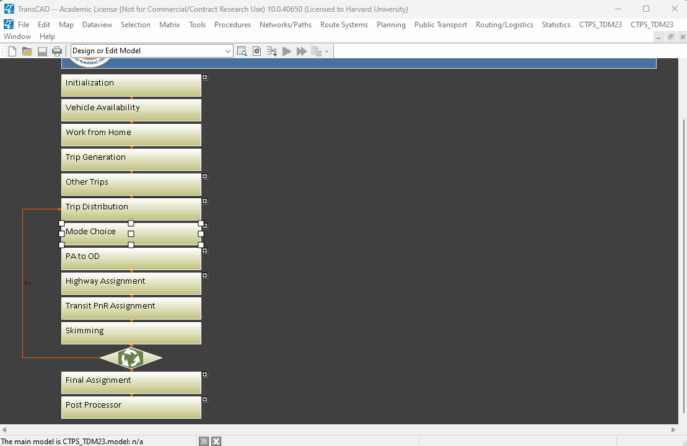
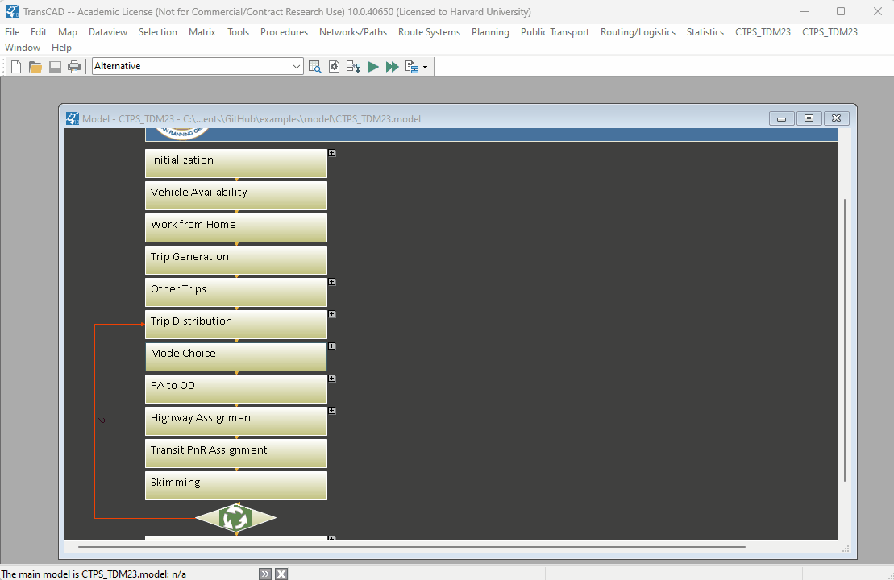
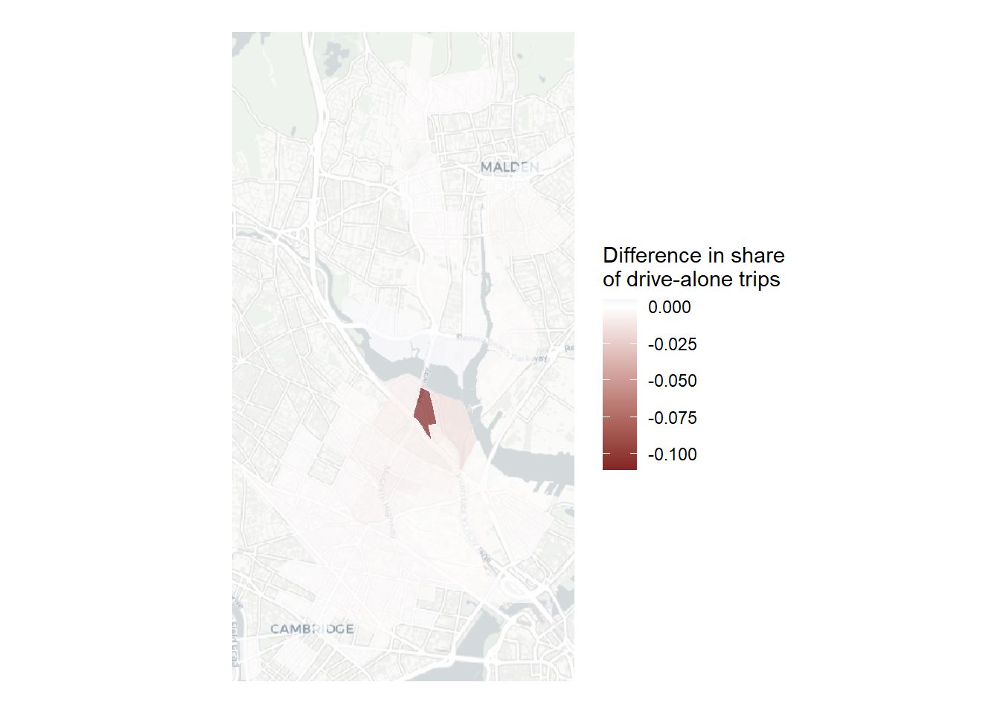

library(tidyverse)
library(sf)
library(DBI)
library(here)
library(leaflet)
library(maptiles)
library(tidyterra)
library(knitr)
library(tigris)
library(omxr)
library(scales)
library(RColorBrewer)
sf::sf_use_s2(FALSE)T4: Mode Choice
The purpose of this assignment is for you to
Run the mode choice step of TDM23 for both the existing (2019) condition and an alternative you’ve developed (it could be the same one you used for previous assignments, or a new one), and
Identify changes in mode choice that result from your alternative scenario.
Load libraries
This analysis uses the following packages:
Run the mode choice model for each scenario
This is assuming you’re using the same alternative scenario that you used for prior assignments.
Open the model file in TransCAD.
Select the scenario you want to run (the options should be “Base” and the other scenario that you’ve previously modified in the
*.scenariosfile).Right-click on and of the model steps and select “Run >”, then “Run Step”.
Do this for both the base scenario and the alternative scenario you’ve created.

Export trip matrices to .omx files
The TDM23 model saves the production-attraction matrices as *.mtx files, which I haven’t had luck importing into R, so you should export them as *.omx files and open them using Greg Macfarlane’s omxr package.
The trip matrix for the folder will be in a file called pa_all_all.mtx, which you can find in your model outputs folder:
outputs
(scenario name)
_demand
mc
- mc_hhpurp_daily.mtx
There are other matrix files that have disaggregated trip totals by peak and off-peak time periods and by trip purpose. Feel free to use those in your comparison, but in this example, I’m just using the daily totals across all trip purposes.
To export the *.mtx file as a *.omx file:
Open the matrix file in TransCAD
Select “Export” then “Table…” from the “File” menu.
Set the file type as “OMX Matrix”, select a filename, and click “Save.”
Click the “Select All” button to get the flows for all modes and click “OK”.

Do this for both your base scenario and your alternative scenario.
Load trip matrices in R
You can can read the files you just exported into R. Here is how you can load the trip matrix for the base scenario and view the first few rows.
base_mc <- here("model",
"outputs",
"Base",
"_demand",
"mc",
"hh_trips_daily.omx") |>
read_all_omx()
head(base_mc) |>
kable(digits = 1)| origin | destination | bk | da | rs | s2 | s3 | sb | ta | tw | wk |
|---|---|---|---|---|---|---|---|---|---|---|
| 1 | 1 | 0.2 | 6.4 | 1.8 | 0.6 | 0.5 | 0 | 0 | 0.0 | 16.5 |
| 1 | 2 | 0.5 | 4.5 | 1.2 | 0.9 | 0.9 | 0 | 0 | 0.3 | 28.8 |
| 1 | 3 | 1.2 | 6.0 | 1.9 | 1.2 | 1.3 | 0 | 0 | 0.8 | 58.5 |
| 1 | 4 | 0.8 | 5.3 | 1.7 | 1.2 | 1.3 | 0 | 0 | 0.6 | 31.8 |
| 1 | 5 | 0.1 | 0.8 | 0.2 | 0.2 | 0.2 | 0 | 0 | 0.1 | 4.3 |
| 1 | 6 | 0.7 | 1.8 | 0.6 | 0.4 | 0.5 | 0 | 0 | 0.4 | 24.3 |
We’ve imported it as a dataframe with the following columns:
origin: The TAZ ID of the trip productions (they’re using origin/destination terms here, but these are still productions/attractions at this point in the model workflow).
destination: The TAZ ID of the trip attractions
bk: The number of daily trips by bike.
da: The number of daily trips by driving alone.
rs: The number of trips by ride-sourcing (e.g. Uber or Lyft).
s2: The number of private car trips with two people per vehicle.
s3: The number of private car trips with three or more people per vehicle.
sb: The number of school bus trips.
ta: The number of transit trips with car as an access or egress mode (e.g. park-and-ride trips)
tw: The number of transit trips with walking as the access/egress mode.
wk: The number of walk trips.
And we can also load the production-attraction matrix for the alternative scenario.
alt_mc <- here("model",
"outputs",
"Alternative",
"_demand",
"mc",
"hh_trips_daily.omx") |>
read_all_omx()
head(alt_mc) |>
kable(digits = 1)| origin | destination | bk | da | rs | s2 | s3 | sb | ta | tw | wk |
|---|---|---|---|---|---|---|---|---|---|---|
| 1 | 1 | 0.2 | 6.4 | 1.8 | 0.6 | 0.5 | 0 | 0 | 0.0 | 16.5 |
| 1 | 2 | 0.5 | 4.6 | 1.2 | 0.9 | 0.9 | 0 | 0 | 0.3 | 28.8 |
| 1 | 3 | 1.2 | 6.0 | 1.9 | 1.2 | 1.3 | 0 | 0 | 0.8 | 58.6 |
| 1 | 4 | 0.8 | 5.3 | 1.7 | 1.2 | 1.3 | 0 | 0 | 0.6 | 31.8 |
| 1 | 5 | 0.1 | 0.9 | 0.3 | 0.2 | 0.2 | 0 | 0 | 0.1 | 4.3 |
| 1 | 6 | 0.7 | 1.8 | 0.6 | 0.4 | 0.5 | 0 | 0 | 0.4 | 24.3 |
Check for differences
Now we can compare the mode shares.
base_mc_by_zone <- base_mc_by_zone |>
rename_with(~ paste0("base_", .), -all_of("zone"))
alt_mc_by_zone <- alt_mc_by_zone |>
rename_with(~ paste0("alt_", .), -all_of("zone"))
mc_comparison <- full_join(base_mc_by_zone, alt_mc_by_zone) |>
replace_na(list(base_total = 0,
alt_total = 0)) |>
filter(alt_total + base_total > 0) |>
mutate(diff_bk = alt_bk_pct - base_bk_pct,
diff_da = alt_da_pct - base_da_pct,
diff_rs = alt_rs_pct - base_rs_pct,
diff_s2 = alt_s2_pct - base_s2_pct,
diff_s3 = alt_s3_pct - base_s3_pct,
diff_sb = alt_sb_pct - base_sb_pct,
diff_ta = alt_ta_pct - base_ta_pct,
diff_tw = alt_tw_pct - base_tw_pct,
diff_wk = alt_wk_pct - base_wk_pct)And, as an example, here is a map of how the share of people driving alone changes throughout the study area. Note that I’m filtering the data to only register a change if there’s a difference of at least 0.01 percentage points.
drive_comparison <- here("model",
"inputs",
"zonal",
"shp",
"CTPS_TDM23_TAZ_2017g_v202303.shp") |>
st_read(quiet = TRUE) |>
st_transform("WGS84") |>
rename(zone = taz_id) |>
left_join(mc_comparison) |>
filter(abs(diff_da) > 0.001)
base_map <- get_tiles(drive_comparison,
provider = "CartoDB.Positron",
zoom = 13,
crop = TRUE)
ggplot(drive_comparison) +
geom_spatraster_rgb(data = base_map) +
geom_sf(aes(fill = diff_da),
color = NA,
alpha = 0.7) +
scale_fill_gradient2(name = "Difference in share\nof drive-alone trips") +
theme_void()
In general, we see that all the changes are fairly small, with the exception of one zone where there the alternative would result in reduction in drive-alone trips of about 9 percentage points. Let’s take a closer look at that one zone.
mc_comparison |>
filter(diff_da < -0.05) |>
select(base_total,
alt_total,
diff_da,
diff_s2,
diff_s3,
diff_rs,
diff_tw,
diff_ta,
diff_bk,
diff_wk) |>
t() |>
kable(digits = 2)| base_total | 9941.02 |
| alt_total | 8664.24 |
| diff_da | -0.11 |
| diff_s2 | -0.01 |
| diff_s3 | -0.01 |
| diff_rs | 0.01 |
| diff_tw | 0.04 |
| diff_ta | 0.01 |
| diff_bk | 0.01 |
| diff_wk | 0.06 |
What we see above is a reduction in the share of private car trips of about 13 percentage points (11 percentage points from drive-alone trips, and one percentage point from each of two-person and three-plus-person car pools). This share is mostly shifting to walk trips (a six-percentage point increase) and transit trips (a five percentage-point increase - including four percentage points for walk-access and one percentage point for drive access).